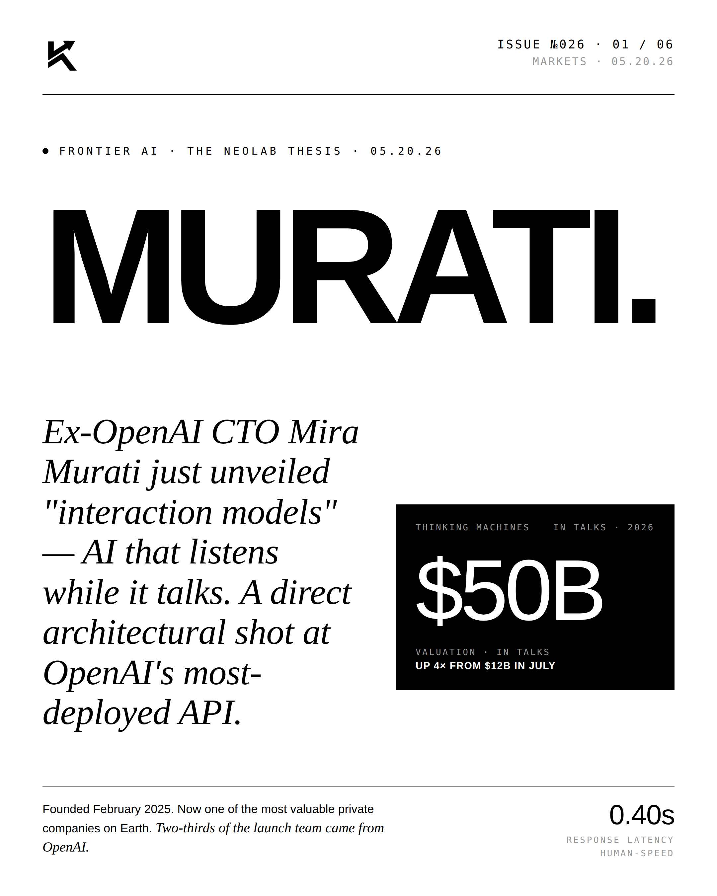
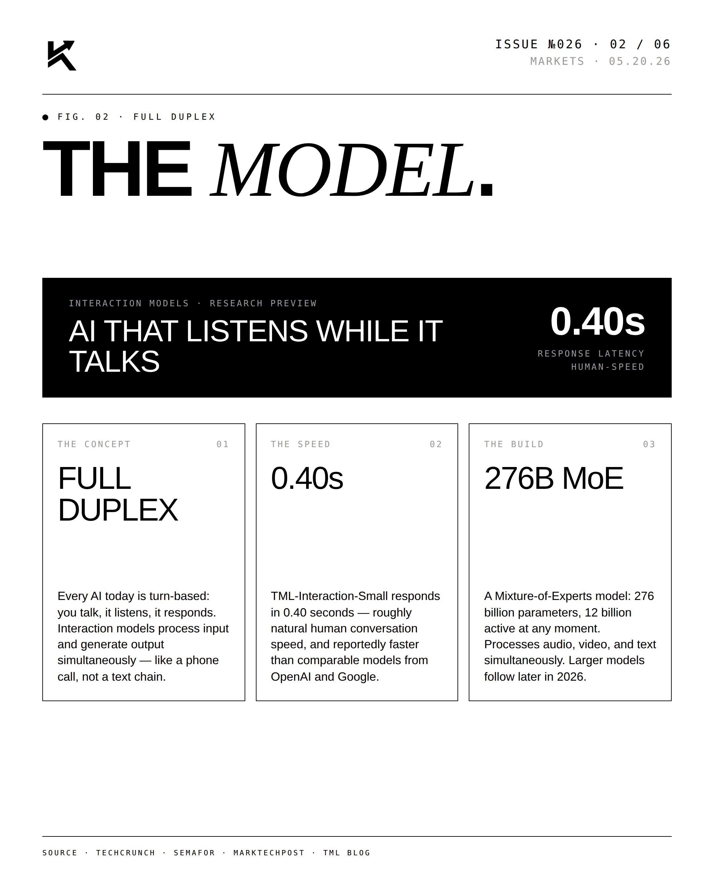
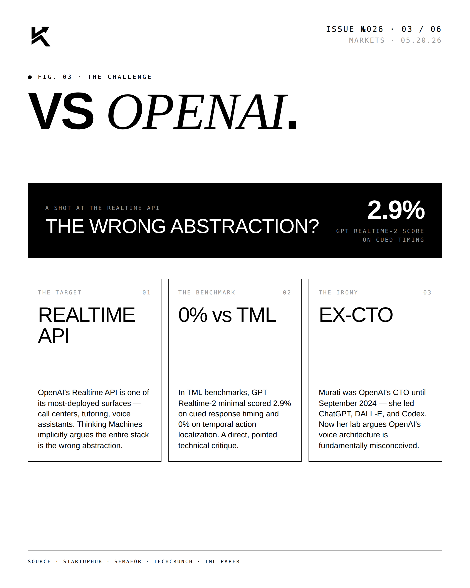
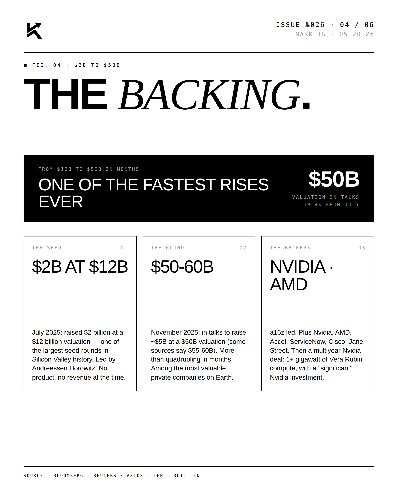
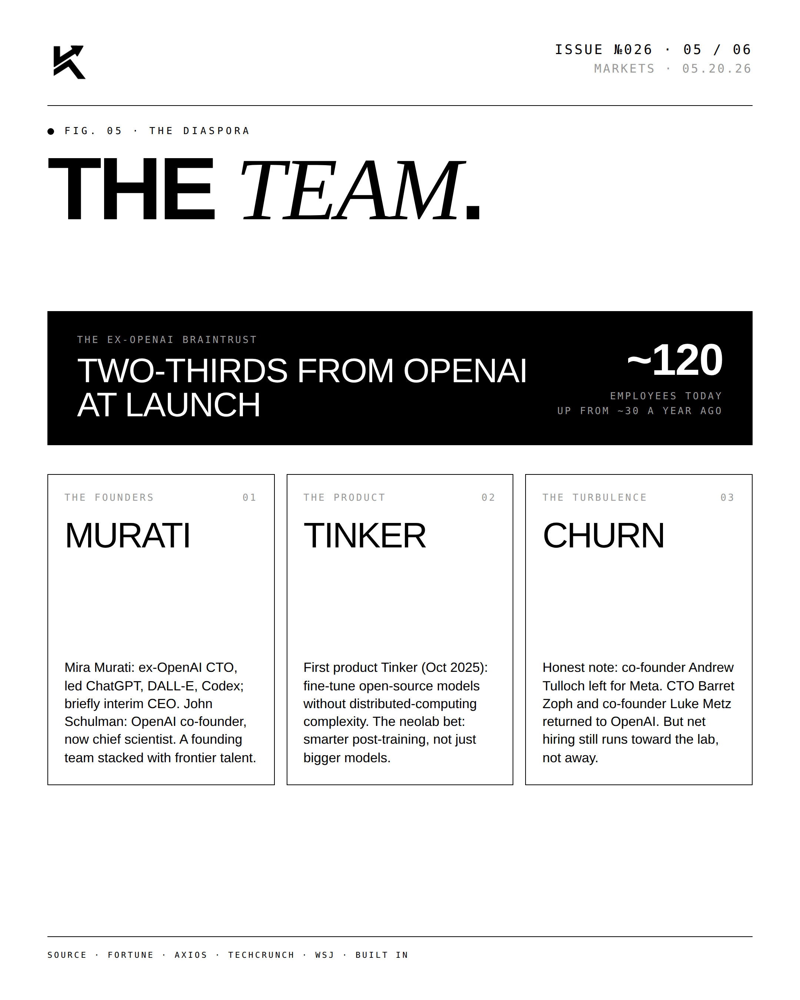
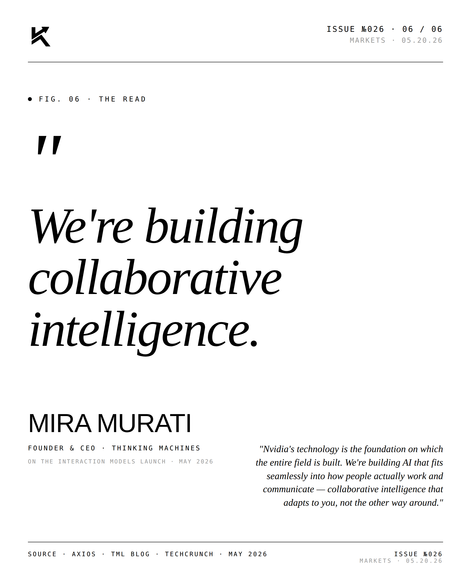

Murati.
Ex-OpenAI CTO Mira Murati unveiled “interaction models” — AI that listens while it talks — at Thinking Machines. A $50B valuation in talks, up 4× from $12B in July. A direct shot at OpenAI's most-deployed API.

The Lead.
Founded February 2025, Thinking Machines is already among the most valuable private companies on Earth — two-thirds of the launch team came from OpenAI. The interaction-model architecture targets roughly 0.40s response latency, about human conversational speed, and reframes the assistant as a real-time collaborator rather than a turn-based API.




"We're building
collaborative intelligence."MIRA MURATIFounder & CEO · Thinking Machines · 05.20.26
"Nvidia's technology is the foundation on which the entire field is built. We're building AI that fits seamlessly into how people actually work and communicate — collaborative intelligence that adapts to you, not the other way around." — Mira Murati, Thinking Machines.
